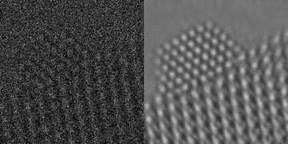

This website provides resources on deep denoising, an approach to remove noise from imaging data via artificial intelligence.
AI-powered Denoising for Scientific Discovery

Deep denoising is able to reveal the atomic-level structure of a platinum nanoparticle from electron-microscopy data that is severely corrupted by imaging noise.
We have applied this technology to study catalytic nanoparticles that are critical for industrial processes. Observing the dynamic rearrangement of the atoms on such nanoparticles requires imaging at a millisecond time scale, which results in severe noise degradation (as in the left panel above). Deep denoising is able to remove this noise, revealing previously unobserved atomic-level dynamics at the nanoparticle surface, as reported in the following article:
Visualizing nanoparticle surface dynamics and instabilities enabled by deep denoising Crozier PA, Leibovich M, Haluai P, Tan M, Thomas AM, Vincent J, Mohan S, Marcos Morales A, Kulkarni SA, Matteson DS, Wang Y, Fernandez-Granda C. Science 387.6737 (2025): 949-954. Code. Data.
The following tutorial provides a self-contained description of deep denoising, emphasizing aspects that are important in real-world scientific applications.
Learn, Denoise and Discover: A Guide to Deep Denoising with an Application to Electron Microscopy Mohan S, Liu K, Crozier PA, Fernandez-Granda C. IEEE Signal Processing Magazine 42 (2): 38-56, 2025
We provide videos based on the tutorial, as well as code to reproduce the computational experiments in the tutorial, which involve 1D piecewise-constant signals, natural images, and electron-microscopy data. The full code repository is available on GitHub.
The development and dissemination of these materials were made possible by the support of the National Science Foundation through grants OAC-2104105 and OAC-2103936.